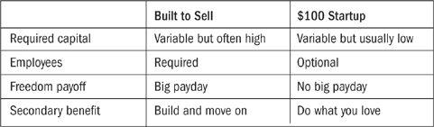
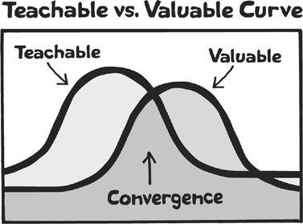

“Nothing will work unless you do.”
—MAYA ANGELOU
Among the people we’ve met in our story thus far, a few are active risk takers, charging ahead to storm the castle, career or finances be damned if they fail. But far more common are those who carefully take the time to build a business step by step. It’s a myth that all those who choose to go it alone are Type A motorcycle riders, betting it all on the success or failure of one project. Entrepreneurs are not necessarily risk takers; it’s just that they define risk and security differently from the way other people do.
Tsilli Pines, an Israeli-American designer who now lives in my hometown of Portland, Oregon, exemplifies the group of cautious entrepreneurs. Over the course of eight years, she crafted a business making ketubot, custom-designed Jewish wedding contracts. During most of that time, the business was a night-and-weekend project she worked on after coming home from the design studio where she was employed. With a regular paycheck from the day job, Tsilli felt safe experimenting with the business and learning as she went along. She also noticed an important side benefit to working this way: With limited hours to spend on the business, she had to make them count.
Thanks to referrals from happy couples, the business grew slowly but steadily, with more orders each year. Each ketubah was a labor of love, priced at $495. As 2009 drew to a close, Tsilli felt prepared to make the leap. She gave notice to her boss and colleagues and prepared to go full-time. This was it! She had jumped!
Except … the view on the other side wasn’t all she had expected. The first week of freedom felt great; the second week she began to wonder, What do I do all day? “I underestimated the value of having some work that was collaborative and not self-directed,” she said. Over the next few months, the business earned less than expected. Orders were still coming in and the situation was far from desperate, but Tsilli felt trapped, drained of the creativity she had thrived on while starting up.
“The all-or-nothing paradigm was too much pressure,” she continued. “I’m running a creative business, but it’s a creativity killer for me to define my whole income on the need to continuously deploy my creativity.” It was a hard decision to make, but six months after leaving the design firm, she approached the owners with a proposal: How about coming back part-time? They said yes and were happy to have her.
Moving back to the studio three days a week was the right fit. When she had left six months earlier, she had a lot of responsibility as the lead designer; there was no way she could stick around in a lesser role without first leaving for a while. Coming back in under the radar gave her the security of having a certain amount of fixed income while retaining the freedom of working half-time on her other projects. Also, Tsilli now worked as a contractor instead of an employee, and that gave her an unexpected but important sense of still earning all her income “on her own,” with roughly half coming from the studio and half from her business.
It was right for her to leave, and it was right to go back. The business is still profitable, but without the pressure of needing to rely on it exclusively. Tsilli summarizes it like this: “The feeling I have is that I’m still laying brick after brick. The different pieces interlock, and over time they may build to critical mass. But right now I’m in a good place.”
Tsilli’s story illustrates the real challenge that befalls almost everyone with the opportunity to make a major career change and go it alone: finding a way to build systemization into the business, and deciding what role the business will play in the rest of their lives. Sooner or later, every successful business owner—accidental or otherwise—faces a choice: Where are we going with this thing? As described throughout the book, many of the members of our group made a deliberate decision to stay small, creating a “freedom business” for the purpose of having the freedom. Others chose to grow by carefully recruiting employees and going all in.
Here’s how three people faced this critical choice, resolving it in different ways.
Option 1: Stay Small
No one is truly a born entrepreneur, but Cherie Ve Ard probably comes close. Working on her own since she was twenty, she’s now thirty-eight and has never looked back. Her father was also an entrepreneur, starting the family software business that Cherie eventually took over. The company develops custom software solutions for health-care providers. In 2007 she hit the road with Chris Dunphy, her partner, and they traveled by RV across America. Being on the road while running a software company led to an obvious expansion: Cherie and Chris started a side business making mobile apps.
Business is good, but Cherie has purposely declined to pursue a number of expansion ideas. Here’s how she puts it: “Without a doubt, the smartest decision I made was to set a specific intention to not grow the business. Growing up as the daughter of an entrepreneur, I watched my father’s creativity and inventor mind-set get sapped as the business grew from just him to over fifty employees. The stress wore him down and diminished his quality of life.”
When I last spoke to Cherie, she was on the island of Saint John, where she and Chris had settled in for a stay of a few months (“maybe longer, or as long as we feel like it”). Cherie earns a good income of at least $50,000 a year but is insistent that the money isn’t the point. “My feeling of being a successful business owner is based on the quality of life I lead, not the amount of money I earn,” she says. “I own my business. The business doesn’t own me.”
Option 2: Go Medium
In the SoDo area of downtown Seattle, a factory hums with the sound of sewing machines. Chinese-American women, many of whom have worked at the factory for years, diligently apply patches to backpacks and laptop bags. I tour the factory with Tom Bihn, the owner, and his business partner, Darcy Gray.
With more than twenty employees and his own factory, Tom isn’t afraid of growth. But he turned his back on the biggest growth opportunity of all: distributing his popular bags through big-name retailers, many of which have asked repeatedly for partnerships. I was curious about this decision, so I sent Tom and Darcy an email later to ask for more input. Here’s what they said:
We chose to be our own manufacturer and direct retailer initially because it’s more interesting. We get to march to our own drummer, so to speak. If the goal is simply to make money, well, that’s just boring. We wanted to make a cool business, with cool products, cool customers, and cool employees; we wanted to build a brand and a long-term place in the world. To sell to mass-market retailers may or may not be lucrative, but it does little for brand identity. It can also tie your fortune to a company over which you have no control: If they go down, you may go too. Our future is tied to what we do, decisions we make, and that’s wicked good fun.
Marching to your own drummer is certainly interesting, and as Tom pointed out in another conversation, it may be a better business model as well. Cash flow for their business comes from many individual customers, so they never have to worry about one big store dropping their inventory (or defaulting on their debt). Because there’s only one source, Tom Bihn bags are well positioned against being perceived as a commodity. Tom and Darcy are able to charge a good price for the bags and ensure that they can continue to support all the employees.
When asked about any bad days or negative experiences in the business, Tom said something I’ve been thinking about ever since: “All the bad days have two things in common: You know the right thing to do, but you let somebody talk you out of doing it.”
At least in this case, Tom never let himself get talked out of what was clearly the right thing for him.
Option 3: Split the Difference
Sometimes the choice between small and big has more than two answers. A creative individual can learn her lessons about the wrong kind of growth and then apply them to the right kind. Meet Jessica Reagan Salzman, owner of a one-person bookkeeping shop in Attleboro, Massachusetts. I knew Jessica was a numbers person when she provided estimated income for the next year of exactly $110,899. Many entrepreneurs are lost in the bigger picture and aren’t certain about their finances. They tended to answer my questions about income projections with statements like “Uh, about one hundred, maybe one-fifty or so.” With Jessica, there was no need for follow-up.
Ironically, Jessica started the business after an unsettling experience at a new job she had just taken for a CPA. As she was settling into the job, she kept tallying figures and wondering why something wasn’t balancing properly. She finally figured it out: Not only was the firm in trouble, it wouldn’t have enough to pay her when the very first bookkeeping cycle came around. Oops. Jessica quit and decided to go it alone.
Right from the beginning, the business was profitable at a decent part-time level, and Jessica was focused on raising a family without worrying about making a ton of money. But one day, her husband, Michael, called and said he was coming home early. “That’s nice,” she said. “Any special occasion?” There was a pause before he told her the rest of the news: He had been laid off, effective immediately.
Jessica’s business had been successful as a side project, but it didn’t make nearly enough money to support a family, with their second child just three weeks old at that point. After the shock wore off, they talked about options, and Jessica decided to take the business to a higher level. Her husband became the primary caregiver at home, and Jessica went to work. The business quickly grew and all was well under the new arrangement, but then it started growing too fast. “We had made major progress in the direction of growing revenues,” she said, “but we had also experienced soaring costs, and our bottom line clearly reflected the necessity for a major change.
“I just assumed that’s what you were supposed to do,” she continued. “As the business improves, you hire people. Right?” Unfortunately, although hiring people can sometimes help a business grow, it always creates much higher costs and fixed obligations. Jessica made more changes, switching her business to a sole proprietorship and returning to a one-woman shop.*
Regardless of which path you take, as your project grows in scope, you can find yourself spending all your time responding to things and little time actually creating anything. The solution to this common problem is to focus on working on your business as opposed to in it. When you’re operating the business, you spend time putting out fires and keeping everything running as it should. Working on the business requires a higher-level approach.
Every morning, set aside forty-five minutes without Internet access. Devote this time exclusively to activities that improve your business—nothing that merely maintains the business. Think forward motion … What can you do to keep things moving ahead? Consider these areas:
BUSINESS DEVELOPMENT. This is work that grows the business. What new products or services are in the works? Are there any partnerships or joint ventures you’re pursuing?
OFFER DEVELOPMENT. This kind of work involves using existing resources in a new way. Can you create a sale, launch event, or new offer to generate attention and income?
FIXING LONG-STANDING PROBLEMS. In every business, there are problems that creep up that you learn to work around instead of addressing directly. Instead of perpetually ignoring these issues, use your non-firefighting time to deal with the root of the problem.
In the United States, it’s the big question facing many prospective entrepreneurs: “How can I insure my family when I’m self-employed?” (Canadians and others can skip this section and breathe easy.) Unfortunately, universal health care is still a long way off before we catch up with the rest of the developed world.
To get some options, I surveyed our group of case studies (those from the U.S.) and also conducted several online conversations with large groups on Twitter and Facebook. The answers varied considerably. Someone wrote, “Get screwed and pay a lot of money for coverage that doesn’t help you.” Alas, in some cases, that statement may not be much of a stretch. But in other cases you have choices. Here are some of the most common ones.
Buy a high-deductible policy and pay cash for visits to the doctor. Perhaps the most common solution among the self-employed is to shop around and purchase a high-deductible policy to cover serious illness or accident. Then set aside a savings fund—either self-managed or with a health savings account (HSA)—to cover doctor’s visits and preventive care. It’s best to compare quotes from an independent broker, and in some cases a local or national group may offer a discounted policy. Several people mentioned the Freelancers Union, for example.†
Join a concierge program. A concierge program is the opposite of a high-deductible policy that covers only serious problems. For a monthly fee ($150 to 300 on average), you can visit the same doctor for most primary and preventive needs. You’ll also get the doctor’s email address and “call anytime” cell phone number, and the doctor will act as an advocate and referrer if you need more serious care. Some people combine a concierge program with another policy to ensure that both short-term and disaster prevention needs are met.
Get insured through your partner. A number of business owners wrote to tell me that they relied on their spouse or partner’s job to cover both of them while they worked full-time or part-time in the business. Courtney Carver was diagnosed with multiple sclerosis in 2006, and her medical bills would be $8,000 a month without insurance. “I feel fortunate that my husband works for a company that has group insurance,” she says. “For now, starting a business together with him leaving his job is not an option because of my medical condition. We are looking at other out-of-state options for the future but are tied to his job for the insurance for now.”
Of course, this option isn’t available to you if you’re single or if your partner doesn’t have a job that provides insurance benefits, but if you do have the option, it may very well be the best one.
Stay on COBRA as long as possible. If you have lost your job, COBRA allows you to continue receiving the same health-care coverage for a certain length of time at the same price your former employer paid. You have to pay for it, but because it originally was based on a group rate, the cost is often lower (and coverage may be better) than that of any plan you could purchase yourself. Several people spoke of extending COBRA coverage for up to three years as they built their businesses.
Self-insure or use an HSA. “My health-care plan involves prayer, vitamins, and avoiding sharp objects,” Amy Oscar told me on Twitter. Others explained that they were just being pragmatic about the poor options available to them, weighing the costs and what they perceived as limited benefits of an expensive plan they weren’t likely to use. If you have a family or health-care issues, you may not be comfortable with this option.
PRICING REVIEW. As discussed in Chapter 11, you should review your prices regularly to determine whether a price increase is in order. In addition, consider adding appropriate upsells, cross-sells, or other income-generating tools to your arsenal.
CUSTOMER COMMUNICATION. This involves not just dealing with emails or general inquiries, but initiating communication through newsletters and updates.
A key rule for all these activities is to initiate, not respond. Doing this for just forty-five minutes a day can bring huge rewards even when everything else is crazy and you spend the rest of the day putting out fires. Onward!
Regardless of your growth strategy, you’ll want to pay attention to the health of your business. The best way to do this is with a two-pronged strategy:
Step 1: Select one or two metrics and be aware of them at any given time, focusing on sales, cash flow, or incoming leads.
Step 2: Leave everything else for a biweekly or monthly review where you delve into the overall business more carefully.
Some members of our group were much more diligent about tracking metrics than others, with a number of people talking about being obsessive over data and others saying they had “no idea” about what was happening in the business. (My opinion on this approach: Personalities and skill sets vary, but be wary of delegating all financial knowledge to someone else. Having no idea about money stuff is usually a bad sign.)
The metrics you want to track will vary with the kind of business. Here are a few of the most common examples.
Sales per day: How much money is coming in?
Visitors or leads per day: How many people are stopping by to take a look or signing up for more information?
Average order price: How much are people spending when they order?
Sales conversion rate: What percentage of visitors or leads become customers?
Net promoter score: What percentage of customers would refer your business to someone else?
Some businesses choose more specific metrics. Brandy Agerbeck, the graphic facilitator we met in Chapter 7, earns her living through corporate and non-profit bookings. Every year she needs a certain amount of bookings, so she keeps a set of index cards to track this number. When the index cards fill up, she knows she’s good for a while and can focus on other things.
Once or twice a month it’s good to take a deeper look at the business and record some metrics that should be improving over time. The kinds of things you’ll probably be interested in are more detailed sales figures, site traffic and social media, and the growth of the business. You can get a free spreadsheet to help with this process in the online resources for this book at 100startup.com.
John Warrillow built and sold four companies before “retiring” to write, speak, and invest. After learning his lessons through those four experiences, he now advocates a specific model for owners of small companies who wish to sell their business one day. Most of John’s recommendations relate to the need to create an actual company or organization that can thrive outside the business owners’ specific skills.
In other words, the built-to-sell model is different from the model we’ve looked at in this book. Many of our case studies involve people who went into business for themselves because it was fun, not because they wanted to build something and then cash out. However, John’s recommendations are solid for owners who want to pass a business on, and some of them can be adapted to improve a business even if you want to stick around. You can see how the two models compare in the table below.
BUILT TO SELL—$100 STARTUP COMPARISON

In trying to decide which path to pursue, the simple question to answer is: “What kind of freedom do you want?” John’s model is all about creating an entity apart from yourself and then selling it for a big payday. The $100 Startup model is more about transitioning to a business or independent career that is based on something you love to do—in other words, something intrinsically related to the owner’s skill or passion. Neither model is better; it just depends on your goals.
If you’d like to have the option of selling your business one day, John’s point is that you have to plan for it by taking specific steps. The most important step in creating an independent identity for the business is to create a product or service with the potential to scale. This is an important distinction from many of the businesses we’ve described thus far, so let’s take a look at how John explains it.

A scalable business is built on something that is both teachable and valuable. A CPA provides a highly valuable service, but it isn’t easily teachable (she can’t just bring someone into her practice and hand it over to him). On the other hand, you can teach someone how to bus tables at a restaurant in a few minutes, but that isn’t a valuable service (lots of people can bus tables). Therefore, a business that has the potential to be sold easily for a high profit offers something at the intersection of teachable and valuable.
John built a subscription service that conducted financial research and provided a series of informative reports. This was highly valuable to his clients but also teachable to other employees. Another time he built a firm that produced consumer focus groups for big companies—again, a highly valuable service, but also replicable under new ownership.
The solutions found by Tsilli, Cherie, Tom, Jessica, and John varied considerably. In implementing their solutions, each of them said yes to something while saying no to something else. Tom declined to accept the deals from big-box retailers, but he wasn’t afraid to hire employees and grow on his own terms. Cherie preferred to keep things small and intimate. Tsilli found security by growing her business and working as a contractor for her former employer.
What united these different experiences was a sense of controlling their own destiny and finding freedom in nurturing a meaningful project. As your own project grows, you’ll also need to make decisions based on your preferences and specific vision. Just remember that these are good decisions to make and a good position to be in.
KEY POINTS
There’s more than one road to freedom, and some people find it through a combination of different working arrangements.
*Jessica’s business is called Heart Based Bookkeeping, and she likes to call herself a soul proprietor: someone who is emotionally and spiritually invested in her work.
†See freelancersunion.org. Others mentioned eHealthInsurance.com and similar sites that offer an instant comparison of rates and plans for any state.